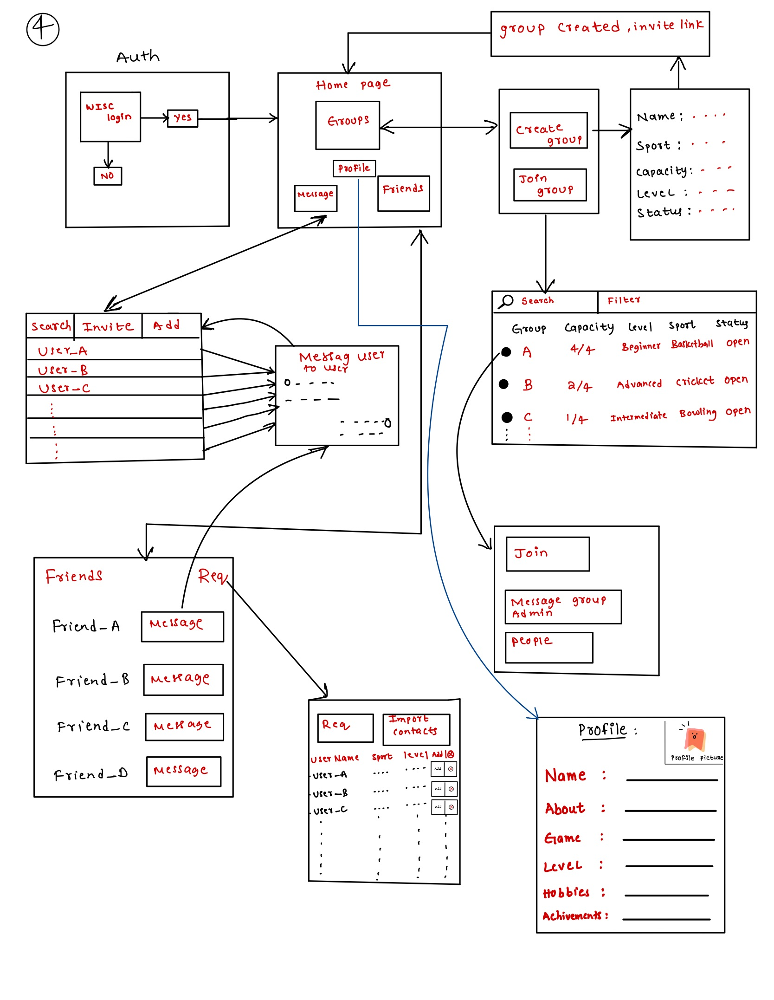
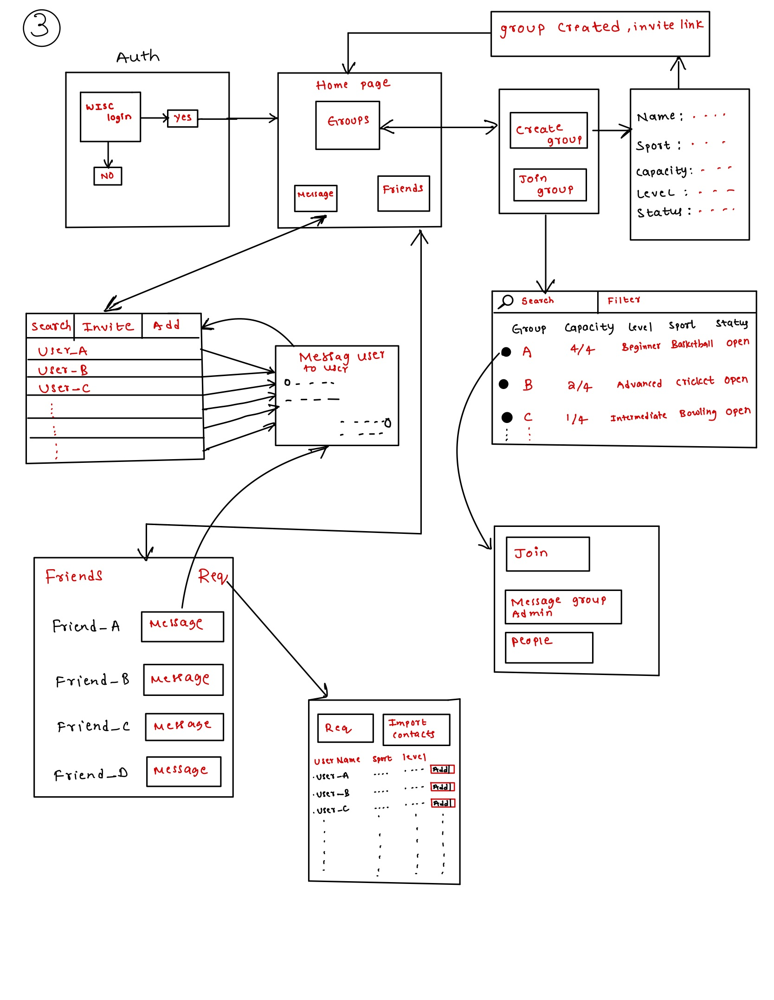
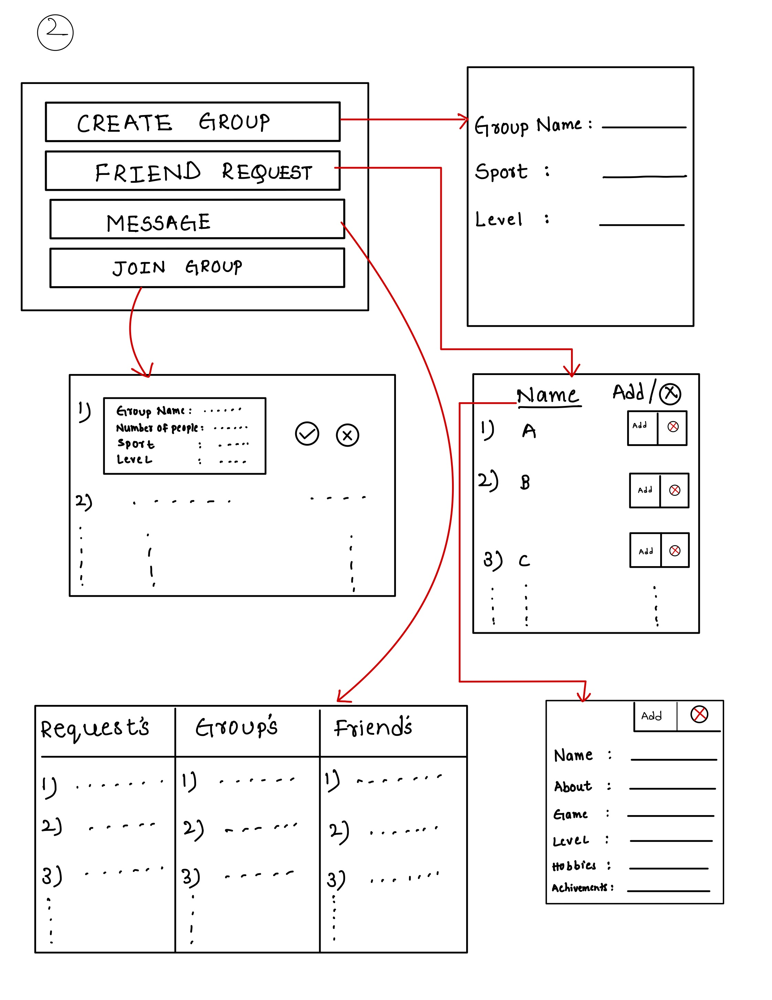
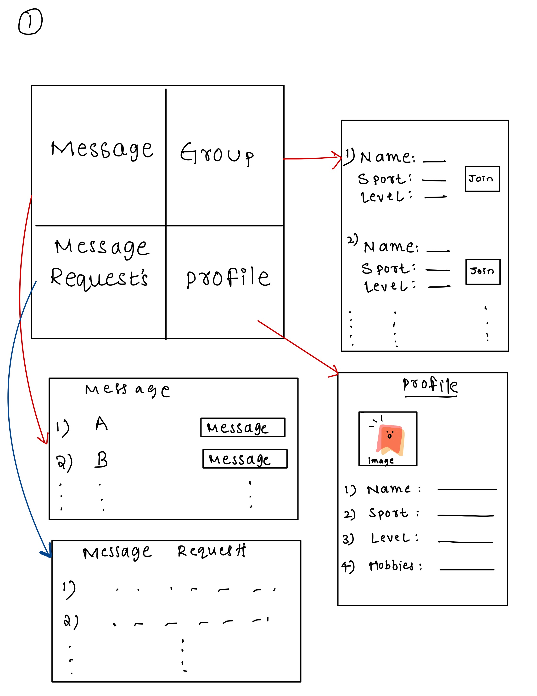

Connecting university students to play sports together using user-centered design.
Explore the Case StudyThis project focuses on building a system to connect students interested in playing similar sports or games. A key feature is the secure login system, which uses school credentials for data security, ensuring that only students with valid university credentials can access the application. Once logged in, users complete a profile that includes their name, pronouns, a brief bio, their sports interests, and their experience level. The system allows users to request to join existing groups or create new ones based on the game and the user’s level. Additionally, users receive friend recommendations, and the search functionality makes it easy to find friends or groups, while features for managing current friends and groups are also included.
The platform enables users to message their friends or groups, allowing them to coordinate and find partners for games. Groups can be public or private, with private groups accessible by invite only, while public groups are open to everyone. This cross-platform mobile application, addresses the problem of students feeling excluded when they don’t have a partner to play with, ultimately connecting like-minded people. The platform enhances community engagement and creates a social network for students interested in sports.
In today’s fast-paced university environments, students often face challenges when trying to find partners to participate in sports and recreational activities. Many students feel left out simply because they are unable to connect with others who share their sports interests. Traditional ways of organizing games, such as through word-of-mouth or bulletin boards, are often inefficient and limit students’ ability to meet new people.
With the increasing reliance on digital platforms for social and recreational purposes, we identified a gap for a system that specifically helps students connect based on their shared interest in sports. This research project aims to design and develop a mobile application that addresses this issue by allowing students to create profiles, form groups, and join games based on their interests and skill levels.
The goal is to create a user-friendly, secure, and effective platform that fosters social interaction among university students, giving them the opportunity to meet new people, stay active, and engage in sports and games without the hassle of finding teammates or partners. By leveraging university credentials for login and data security, the system ensures that the community remains safe, while providing students with a seamless way to organize and participate in recreational activities.
For collecting valuable data and gaining insights into the target user base, a Cultural Probe was conducted. This method allowed participants to reflect on their experiences and preferences regarding finding fellow players for sports and games. The goal was to gather a deeper understanding of the challenges students face when trying to connect with others who share similar sports interests. The questions asked during the cultural probe helped in identifying key features, privacy concerns, and user preferences that would shape the final design of the application.
Have you ever faced a situation where you would like to join a game, but you do not know anyone?
This question explored whether participants have experienced difficulties in finding people to play sports with, highlighting a potential gap the app could fill.
What kind of features would you like to have in these applications?
By asking this, the goal was to understand the features that users value the most in sports matchmaking apps, such as group creation, friend suggestions, and search functionalities.
Are there any privacy concerns you have for this application?
This question addressed user concerns about safety and privacy, helping to identify the necessary safeguards that should be implemented in the app, like using university credentials for login.
Do you prefer to use an application and form a group to play a game or just go to a location and randomly ask people who are playing?
This aimed to understand users' preferred approach to connecting with others, whether through digital means or in-person spontaneity.
How would you choose a group or other players?
The intent of this question was to discover what factors users consider important when selecting people to play with, such as skill level or game preferences.
What kind of information would you like to know about the user or the group?
This question helped to identify what user or group details (e.g., experience level, interests) should be visible within the app to facilitate better matching and group formation.
My user population is college students, and I primarily chose this group because my project focuses on connecting students to others for playing sports and games. This problem is prevalent on college campuses, where students often struggle to find partners or groups for recreational activities.
To gather insights, I went to the recreational center and spoke with students waiting outside the courts to join games, as well as random students in the library for the cultural probe. The participants in the cultural probe were all college students, ranging from freshman to senior year, and majoring in various fields.
Based on the feedback from the cultural probe, it became evident that there is a significant need for an application that connects students interested in similar sports and games. Participants expressed interest in features such as recommendations for people and groups with similar interests, the ability to send messages to connected friends or groups they are part of, and search functionality for finding others with similar sports interests.
Additionally, most users mentioned that they would prefer to choose players based on shared interests and experience level in the sport. This feedback is essential for designing a system that fulfills these needs effectively.
Jamie is a new college student. At the start of the semester, Jamie wants to play badminton to pass some time, but he doesn't know anyone who plays. He decides to go to the recreational center, where he sees a group of people playing. Jamie asks if he can join them. They agree and tell him he can play in the next match. However, they continue playing without giving Jamie a chance to join. Disappointed and frustrated, Jamie goes home without ever getting the opportunity to play. An application that connects people based on shared sports interests and skill level could have helped Jamie find others to play with and avoid this situation.
The design decisions for my prototype are focused on achieving the goals and objectives of the project, as well as addressing the needs and preferences of the target audience. User testing has been an essential part of the design process, allowing me to gather feedback and make improvements to the prototype based on user input.
In the final low-fidelity prototype, users are required to log in using their college-associated email addresses to maintain security and control over the diversity of users. This is because the target audience of the application is college students.
Once a user has successfully authenticated, they are directed to the home screen, where they can choose from a variety of features, such as creating, sharing, and joining sports groups, and accessing resources and tools for maintaining healthy relationships. The user experience is intuitive and user-friendly, with clear navigation and easy-to-use features.
Overall, the design decisions for the prototype are focused on enhancing the user experience and providing college students with valuable resources and tools for maintaining healthy relationships and staying active through sports. Below is a breakdown of the application's main functions:
Users log in using their university email to ensure security and maintain a safe user base.
Users can create new sports groups or join pre-existing ones based on their interests and skill levels.
The application recommends groups and friends based on similar sports interests, making it easier to connect with others.
Groups can be set to private, where access is invite-only, or public, where anyone can join.
Users can send messages to their groups or friends, fostering communication for game planning.
A user profile page is a feature of the application that displays information about a specific user. This profile page typically includes basic information about the user, such as their name, pronouns, a few sentences about themselves, sports they are interested in, and their level of experience in those sports. The user profile page may also have a profile picture or avatar. The purpose of a user profile page is to provide other users with information about the user and to help them connect with the user. In this application, user profile pages are important for connecting students who are interested in playing similar sports or games.
When navigating to the groups section of the application, a user is presented with two options:
Overall, the group's section of the application provides users with the ability to create and join groups based on their interests and preferences. This makes it easy for users to connect with others who share similar interests and find partners to play games with.
The application includes a page that displays a list of the user's friends, along with an option to message them. This is similar to the friend list feature found on many social media applications. On this page, users can also view and manage their friend requests. They can accept or reject incoming friend requests, as well as cancel any pending requests they have made to other users.
Overall, the friend list page provides users with an easy way to manage their connections with other users on the application. They can view their current friends, send and receive messages, and manage incoming and outgoing friend requests. This helps users stay connected with others who share similar interests and makes it easy for them to find partners to play games with.
In this part of the application, users can see a list of other users they have previously messaged, like the message history feature found in most messenger applications. Additionally, there is a function that allows users to send and receive message requests to users who are not yet friends. This allows users to connect with others who share similar interests and initiate conversations with potential friends or group members.
The messaging feature is intuitive and user-friendly, with a clean and easy-to-navigate interface. Users can view their message history with each user and see the status of their message requests (pending, accepted, or rejected). They can also send and receive messages in real time, making it easy to coordinate games and activities with other users on the application.
Overall, the application's messaging feature is an important part of the user experience, as it allows users to connect with others, initiate conversations, and stay connected with friends and groups. It provides a convenient and effective way for users to communicate with each other and coordinate their activities.
In the first cognitive walkthrough, I presented users with a low-fidelity design. During the cognitive walkthrough, I did not observe any instances where users deviated from the design. The users were able to navigate through all of the functions without any difficulty.
One major design improvement I discovered from the first cognitive walkthrough was the message function. Initially, the message function was not as user-friendly as it could have been. However, based on user feedback, I made several improvements to the design, including making the interface cleaner and more intuitive and adding new features, such as the ability to view message history and manage message requests.
Overall, the cognitive walkthrough was a valuable experience that helped me identify areas for improvement and make changes to the design of the prototype. The feedback I received from users was instrumental in making the prototype more user-friendly and effective.
In the second cognitive walkthrough, I made several changes based on feedback from users. These changes were designed to improve the application's functionality and user-friendliness, addressing any issues or concerns identified during the cognitive walkthrough. One key change was adding authentication using university-associated email addresses, improving security and ensuring the application was accessible only to the target audience (college students).
Additionally, I made the overall design cleaner and more detailed, with clear navigation and easy-to-use features. New features, such as viewing message history and managing message requests, were added to enhance the user experience and make the application more functional.
For the final walkthrough, I focused on adding useful elements to the application that had been removed after the first iteration based on user recommendations. These elements were reintroduced based on additional feedback and testing, designed to improve the functionality and user-friendliness of the application.
I provided users with a final low-fidelity prototype and gave them a few scenarios to see their understanding of the application:
Task: Asked the user to navigate to messages and message User-A.
User Response: The user started with the authentication part, then navigated to the home page, selected the message, then selected User-A to send a message. The user didn't encounter any problems in completing the task.
Task: Asked the user to navigate to messages and accept a pending request.
User Response: The user navigated to the home page, selected messages, and then accepted the message request. No issues were found during the task.
Task: Asked the user to navigate to the group section and create a group.
User Response: The user authenticated, navigated to the home page, selected groups, and created a group without any difficulty.
Task: Asked the user to navigate to join a group and message the owner of a group.
User Response: The user selected the group option, joined a group, and successfully messaged the group owner. No issues were encountered.
Yes, the user will be able to modify their profile information, including their name, pronouns, and a few sentences about themselves.
Yes, the user will be able to specify the sports they are interested in and their level of experience in those sports.
Yes, the user will be able to request to join a preexisting group or create a new one based on the game and level of the user.
Yes, the user will be able to receive friend recommendations and search for friends or groups on the application.
One potential opportunity for future iterations of the prototype is to improve the search and discovery functionality. Currently, the prototype allows users to search for friends and groups based on certain criteria (such as sport type and level of experience), but it may be beneficial to add more advanced search and filtering options. For example, users could search for groups or friends within a certain distance of their location or based on other interests or preferences.
Another potential opportunity is to improve the messaging feature. Currently, the prototype allows users to send and receive messages with other users, but it may be beneficial to add additional features and functionality to the messaging feature. For example, users could be able to create group conversations with multiple users or use emoticons and other visual elements to enhance their messages.
Additionally, there may be opportunities to integrate the prototype with other services or platforms. For example, the prototype could be integrated with social media platforms, allowing users to share information about their groups or activities with their friends on those platforms. This could help to increase awareness of the application and attract more users.
Overall, there are many potential opportunities for future iterations of the prototype. By gathering user feedback and making improvements based on that feedback, it is possible to create an even more effective and user-friendly application that helps college students connect with others and find partners to play sports or games with.
Explore the iterative improvements made to the low-fidelity prototype, showcasing key enhancements with each step.
Focus on improved messaging, enhanced navigation, and added authentication for security.
Updated messaging system, cleaner interface, and feedback-based improvements.
Initial user feedback was implemented, improving user experience and intuitive design.
Initial design focused on basic functionality like profile creation, group joining, and messaging.
The following models illustrate user interactions, system processes, and the structure of the application.
A flow model shows the movement of data and users through a system, highlighting key steps and decisions in the user journey.
A sequence model captures the step-by-step tasks or interactions a user performs to achieve a goal.
An artifact model represents the objects and data associated with user profiles and groups, such as sports interests and group settings.
The physical model shows how users interact with the system and environment, such as sports fields, while using the app.
This project demonstrates the importance of understanding user behavior and preferences when designing a platform that connects college students for sports and games. By conducting a cultural probe and gathering insights through affinity diagrams and cognitive walkthroughs, the design of the prototype was iterated upon to ensure it meets the needs of its users. The final low-fidelity prototype addresses the core problem of connecting students with like-minded peers, offering them opportunities to engage in recreational activities with ease.
Future iterations of the design will focus on improving search functionality, expanding messaging capabilities, and integrating with external platforms to further enhance the user experience. This prototype serves as a foundation for developing a fully functional application that solves the problem of isolation in campus recreational activities.
Thank you for taking the time to explore this research project. For more detailed insights, diagrams, and the full prototype journey, please visit my GitHub repository.